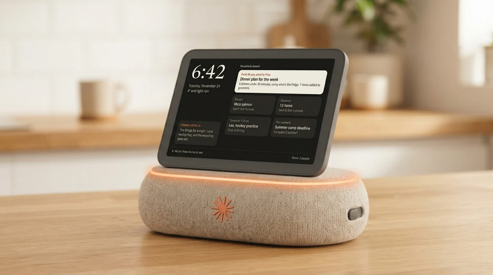
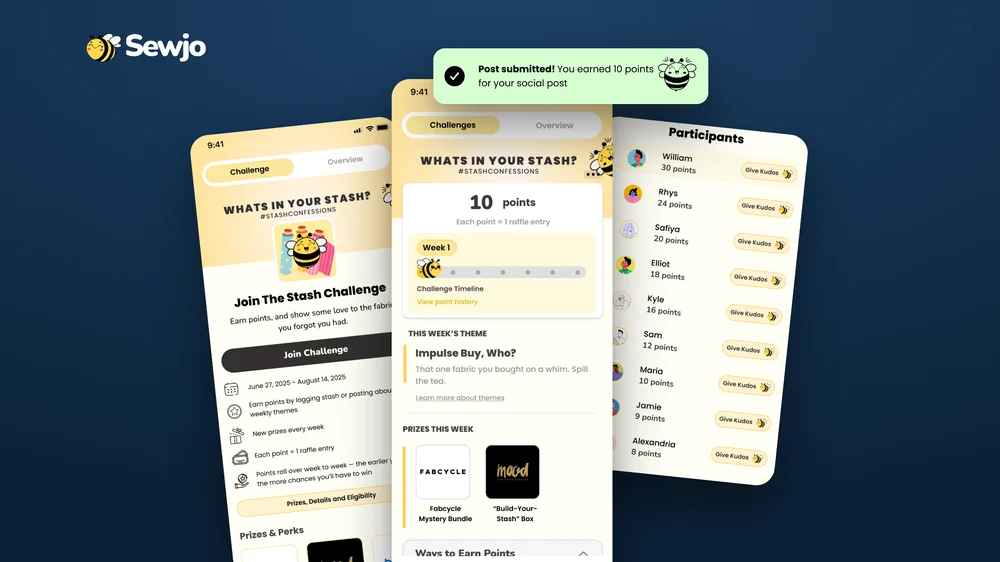

Claude at Home: help that keeps up with dinner
- Concept
- Conversational AI
- Hardware
- Voice

TL;DR
A concept for a countertop Claude device that helps people cook and handle the small decisions around a meal, while making it clear when it's listening, what it remembers and who else can see it.
This is a self-initiated concept, not affiliated with or endorsed by Anthropic.
- Role
- Product designer
- Team
- Solo
- Type
- Self-initiated concept
- Platform
- Countertop device with display and voice
The opportunity
Cooking is full of small decisions
Cooking dinner on a weeknight comes with a steady stream of small decisions: what to make with what's in the fridge, what to swap when an ingredient is missing, how much longer the chicken needs. Help is available through recipe apps, search and voice assistants, but each one asks for something you don't have mid‑recipe. A phone needs clean hands and your attention. A smart speaker is great for timers but loses the thread after one question.
Claude is good at back‑and‑forth, and that's exactly what cooking needs. But putting a conversational AI on a kitchen counter raises a bigger design question:
How can it help in the moment without making people feel watched, interrupted or tied to a screen?
The problem
Current tools handle the first question well and the fifth one badly
When someone is cooking, their hands are busy, their attention is split and the plan keeps changing. They're missing an ingredient, running behind, or realise halfway through that the recipe serves two and they're feeding four. Current tools handle the first question well and the fifth one badly.
A home AI device needs to keep up with a task that changes as the person works through it, while making its boundaries easy to understand. People should be able to see when it's listening, decide what it remembers and get help without managing another complicated screen.
Why I focused on cooking
I chose cooking as the core routine because it's where current tools fall shortest. It happens almost every day, hands are often busy, and the task changes as you go. It also tests the hardest parts of the concept in one flow: starting and interrupting a conversation, glancing at a step, and deciding what gets saved for next time. If the device works for cooking, other routines like fixing something around the house or planning a busy day become extensions, not new products.
Research framing
Start with how people already get help in the kitchen
Rather than assume what people want from an AI device, I'd start with how they already get help in the kitchen.
Research questions
- What do people do today when they get stuck mid‑recipe?
- When is voice more convenient than a phone or tablet in the kitchen?
- What makes an AI device feel useful, intrusive or hard to trust?
- How do people expect a shared kitchen device to handle personal context, like one person's diet or a surprise meal?
- What should it remember between meals, and what should it forget?
Proposed research
I'd start with interviews and contextual inquiry in people's own kitchens, with people who cook regularly: people living alone, roommates and families. I'd watch them cook a typical weeknight meal and note every moment they reach for their phone, ask someone for help or skip a step.
Then I'd test early prototypes for:
Usefulness
Does the device help people make progress on a real meal?
Control
Can people tell when it's listening and control what happens next?
Comprehension
Do people understand what the device remembers and who can see it?
Fit
Does it feel natural on a kitchen counter, or like another device asking for attention?
These are research questions and hypotheses, not findings. I'll add actual findings once the research has been done.
Initial design hypotheses
- People get the most value from AI help when it fits into cooking they're already doing, not as a separate planning session.
- A visible listening state and a physical microphone switch make the device feel more predictable.
- A short step on screen is more useful than a long spoken answer when hands are busy.
- A shared kitchen device needs a clear line between household information and personal conversations.
Product direction
Help that keeps up, then gets out of the way
Claude at Home is a countertop device that helps people cook and handle the small decisions around a meal.
It combines conversation with a small, glanceable display and tactile controls. A person can ask what to make, work through a recipe step by step, or adjust the plan when something goes wrong. The device supports the conversation, then gets out of the way.
Intended audience
People who cook at home regularly and want help that keeps up with them, especially when their hands are busy or a recipe needs adjusting on the fly.
This is an initial audience hypothesis. Research would show which household types get the most out of it.
Prototype
See it keep up with dinner
A walkthrough of the making dinner flow on the device, from asking what to cook to swapping an ingredient mid‑recipe. Watch the light strip: it shows when the microphone is on.
Key design decisions
Five decisions, and what each one costs
1. Make the device task‑centred
The home screen shows tonight's plan, active timers and recipes people chose to save. There's no feed of notifications or suggested conversations. Claude shows up when invited and stays quiet otherwise.
Why
A kitchen device should make cooking easier, not give people more reasons to look at it.
Trade‑off
I considered a proactive "what should we make tonight?" suggestion in the late afternoon. It could be genuinely useful, but it's also the kind of nudge that gets a device unplugged. I left it out of the default experience and made it something people can turn on, so research can show whether anyone actually wants it.
2. Pair conversation with a small display
The display shows the current step, a short ingredient checklist or a timer. It isn't meant for browsing, video or long recipes.
Why
With dough on your hands you can't scroll back, and asking "what was the next step again?" three times gets old fast. A visual reference lets people check details without making Claude repeat itself.
Trade‑off
A bigger screen could fit a full recipe and video tutorials. I kept it small on purpose, so it stays a reference instead of becoming another tablet. The cost is that people who learn by watching lose out, so I'd test whether a "send this video to my phone" option covers that.
3. Put privacy controls on the device
A physical microphone switch makes the listening state clear. An indicator light shows when the microphone is active, and the interface has simple controls for reviewing or clearing saved context.
Why
People shouldn't have to dig through a menu to understand or change whether a device is listening.
Trade‑off
Pressing a button to start talking is clear and private, but nobody wants to press anything with raw chicken on their hands. So once a conversation starts, Claude keeps listening for follow‑up questions for a few minutes, with the indicator lit the whole time, then stops on its own. That keeps cooking hands‑free without an always‑on wake word.
4. Treat the device as shared, but conversations as personal
Household plans, like tonight's dinner or the grocery list, are available to everyone at home. Personal conversations don't automatically appear on the shared screen, and the device doesn't decide who's speaking based on their voice alone.
Why
A shared device in the kitchen shouldn't expose private information or guess who it's talking to.
Trade‑off
Recognising voices would make personal help smoother, like remembering one person's dietary needs without being told. But a wrong guess on a shared device could show someone's private conversation to the wrong person. I chose to have people say who they are when it matters. It's a little slower, but it never guesses.
5. Show what Claude is doing
When a response takes time, like scaling a recipe from two servings to six, the screen shows a short status such as "Adjusting your recipe" with a way to cancel.
Why
A clear status makes the wait understandable and gives people control.
Trade‑off
For quick answers, a status message is just noise. It only appears when a response takes more than a couple of seconds, so simple questions still feel instant.
Device form
Closer to a kitchen object than a tablet on a stand
The device is a compact, angled screen on a soft fabric base, designed for a kitchen counter. The display tilts back toward someone standing nearby, and the form is meant to feel calm and approachable, closer to a kitchen object than a tablet on a stand. The Claude mark on the front of the base is the only branding.
Physical elements
- A small, high‑contrast display for short steps and timers
- A front‑facing speaker in the fabric base
- A tactile button for starting or ending a conversation
- A physical microphone switch
- A light strip along the base that shows when the microphone is active
- No camera in the initial concept
Leaving out the camera is a starting point, not a claim that a camera could never be useful. It keeps the device focused on conversation and limits how much it senses in a shared space.
Interface concept
Deliberately compact, built around three needs
Today
Glance at tonight's plan, active timers and saved recipes.
Cooking
Follow the current step, ask a question or adjust the plan.
Household
Review shared plans, saved recipes and privacy settings.
Today
A calm home screen shows only a few things: what's for dinner, any active timers and a recipe someone chose to save. No stream of suggestions.
Cooking
The current step is large enough to read from across the counter, with the next step previewed underneath. Claude's answers appear in short chunks. People can interrupt, ask a follow‑up or switch to reading the full recipe.
Household
Household settings make sharing and memory visible. People can review saved shared items, clear them and see that personal conversations stay separate.
Example interaction: making dinner
- 1. Someone presses the button and asks what they can make with chicken thighs, half a bag of spinach and rice.
- 2. Claude asks how much time they have and whether anyone is avoiding anything.
- 3. The device shows a four‑step plan and reads the first step aloud.
- 4. Halfway through, they realise they're out of lemons and ask for a substitute, without pressing anything, since the conversation is still open.
- 5. Claude suggests a swap, updates the step and shows the revised version on screen.
- 6. They save the recipe for the household, or end the conversation and flip the microphone switch off.
This flow is a concept to test. Research would show whether people want help in the middle of cooking, and what they'd trust the device to remember.
Evaluation plan
Test it while people actually cook
I'd test a clickable prototype on a tablet inside a simple physical mock‑up of the device. Participants would cook a real, simple meal, ask for a substitution partway through, save a recipe for the household and turn the microphone off.
I'd look at whether people can:
- Start, interrupt and end a conversation easily, even with busy hands
- Tell when the device is listening
- Find the next step without asking Claude to repeat itself
- Tell what information is shared or saved
- Feel comfortable leaving the device on a shared kitchen counter
Measuring success
For an early concept, I'd measure success through usability and trust rather than adoption. Measures include task completion, time to find the next step, how often people ask Claude to repeat or clarify, whether people understand the privacy controls, and how comfortable they feel with the device in a shared home.
Takeaway
Takeaway
Claude at Home explores what conversational AI could look like on a kitchen counter. Making Claude available by voice is the easy part. The real design work is keeping up with a meal that never goes quite to plan, while making sure everyone at home knows when it's listening, what it remembers and who else can see it.
Want to talk about this project?
I'm happy to walk through the decisions behind it.

Next projectTurning a launch campaign into reasons to come back